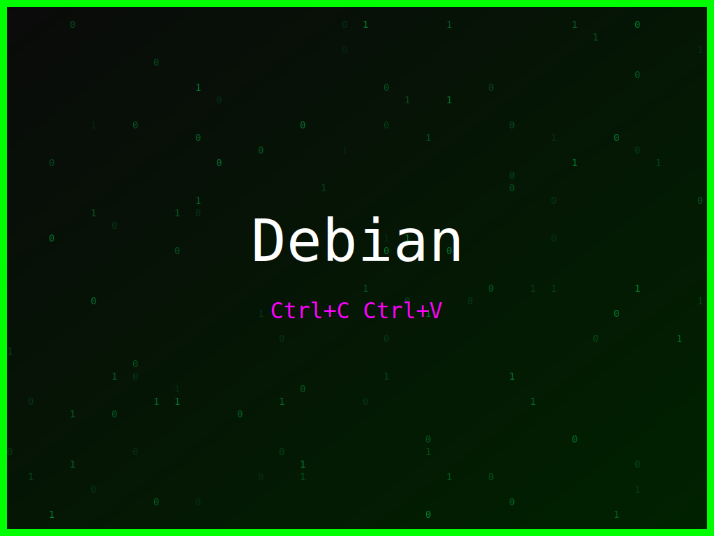

<section class="post-content">


    <div class="details-container">
        
        
        <ul class="details-list">
            <li><strong>Autor:</strong> piolinux</li>
            <li><strong>Descrição:</strong> Um wallpaper Debian com uma ode ao Emacs, para os que preferem a sua vida no editor.</li>
            <li><strong>Distro:</strong> Debian</li>
            <li><strong>Frases:</strong> Emacs é vida, Ctrl+C Ctrl+V, Hack the planet</li>
            <li><strong>Tags:</strong> matrix, colorido</li>
        </ul>
        <a href="../galeria.html">Voltar para a galeria</a>||
        <a href="../wallpaper25.svg" download="wallpaper-debian-emacs-e-vida.svg">Baixar Wallpaper</a>
    </div>


</section>
